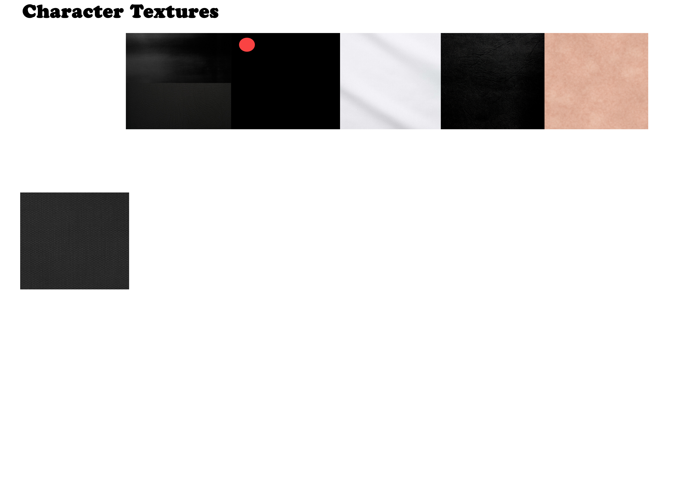
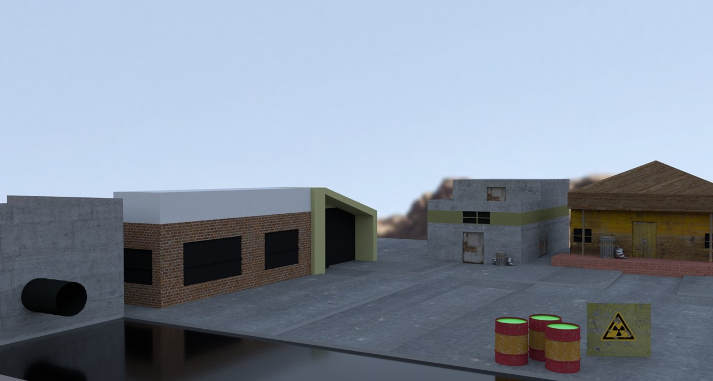
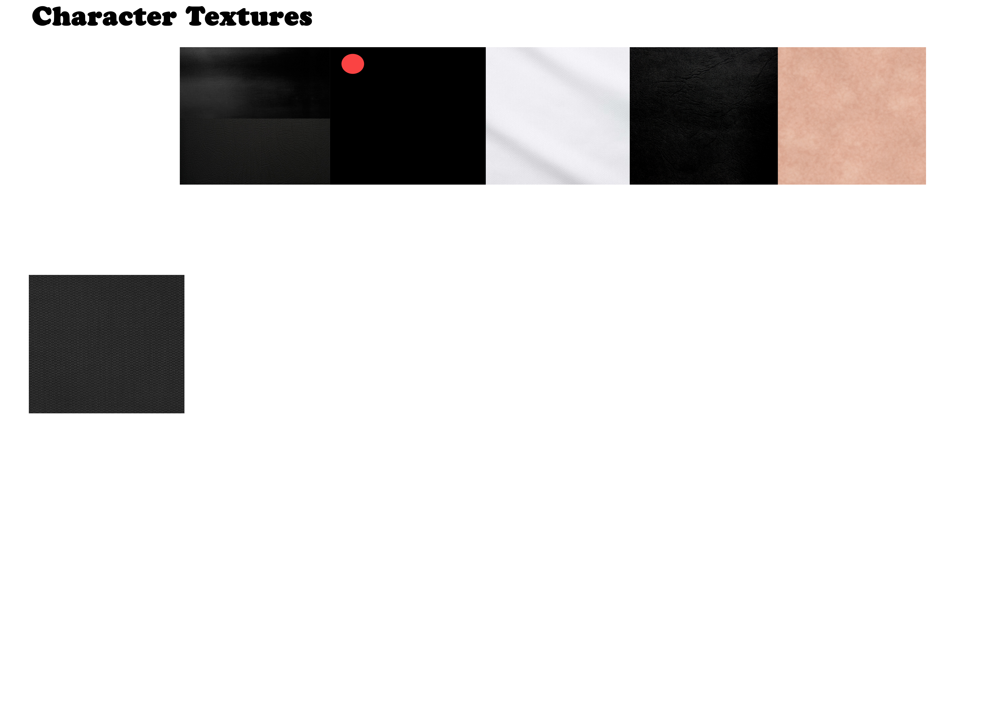
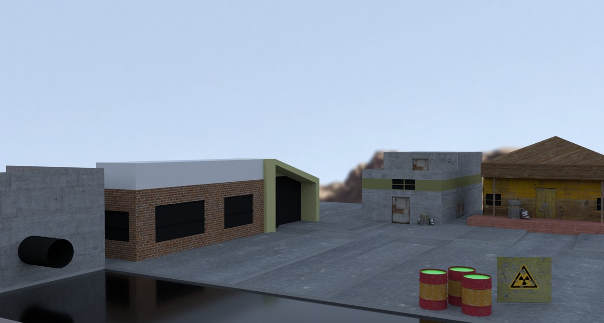
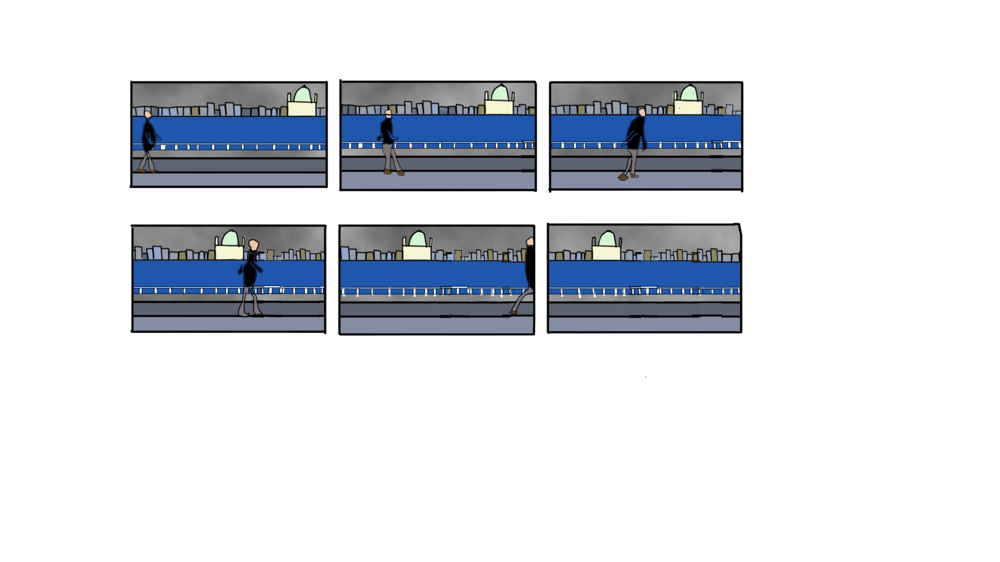
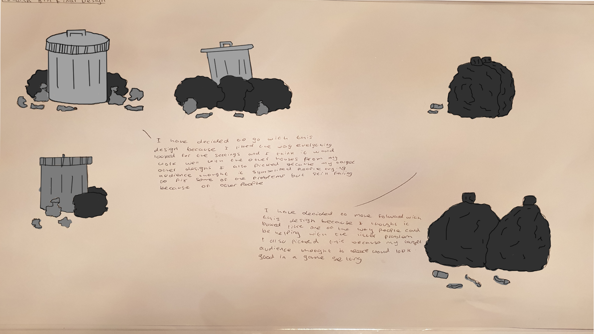
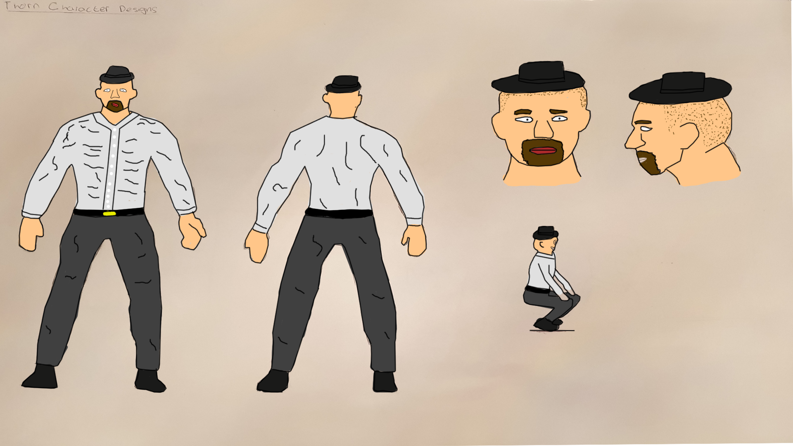
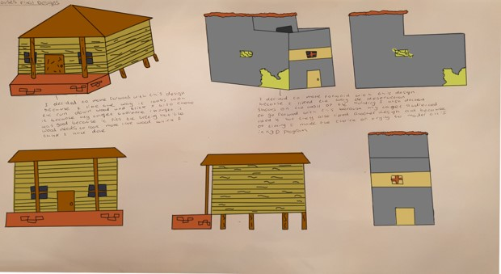
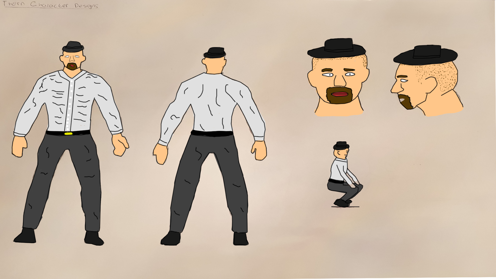
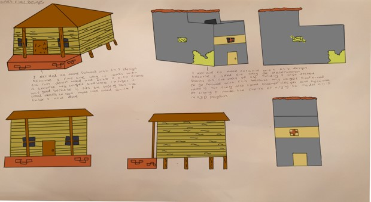

Texturing
 



When using Maya the models I make would stay matte grey if I didn’t use textures which means my products would all look unfinished and similar so I have to texture them so they look good when someone else is looking at them and there are many different techniques and software’s I could use to texture but I felt that photoshop would be easiest for me to learn but I would like to start working with substance painter.
Designs
 
 



dadas